One Knowitball: the whole website
One patch note for the whole job, updated each round, newest first. Every public page gets the home’s look and frame (cream, or dark if you choose), the old games are brought up to date, and Draft gets a lot better. All of it is behind your New look switch (Admin → New look, or knowitball.co.uk/?look=v2) until you say go.
Made by Leo · started 24 Nov 2026 · 5 rounds so far
WHERE IT STANDS
The new look in light and dark on every public page (Mikey’s Draft art kept as dark cards); Daily Draft with ranking, share and streak; Draft spot ratings, Best spot, Needs; Chemistry with Ranked or Custom (three boards); higher-or-lower to keep a player; Watch the big games; Tic Tac Toe today-first, streak, share; Ten-A-Ball topics, bests, share; Rankings running for you; the readability check on every round.
Page titles, sign-in name, Ten-A-Ball lives line and duplicate, Objectives badge clear of Sign in on a computer, three wrong Draft seasons, faint text on the Objectives badge, Draft setup and Tic Tac Toe.
Run supabase/migrations/draft_records_chemistry.sql for the Chemistry board. Mikey’s yes before Rankings come back for everyone. Then, when you’re happy, say go and the switch becomes the site.
Friend matches watched together, Manager mode (docs/DRAFT_MANAGER_PLAN.md), page-by-page polish, the Objectives badge on phones.
ROUND 5 · 27 NOV · DRAFT: CHEMISTRY, RANKED OR CUSTOM, HIGHER-OR-LOWER, WATCHING GAMES
WHAT YOU SAID
“Link between players thing like fifa chemistry … should be a mode or setting … not loads of diff things that make drafts too different so u cant rlly compare … convince to stay … higher or lower card minigame … football manager or chairman style … commentary … sort new picks by rating again … those ui bits are literally touching.”
CHEMISTRY
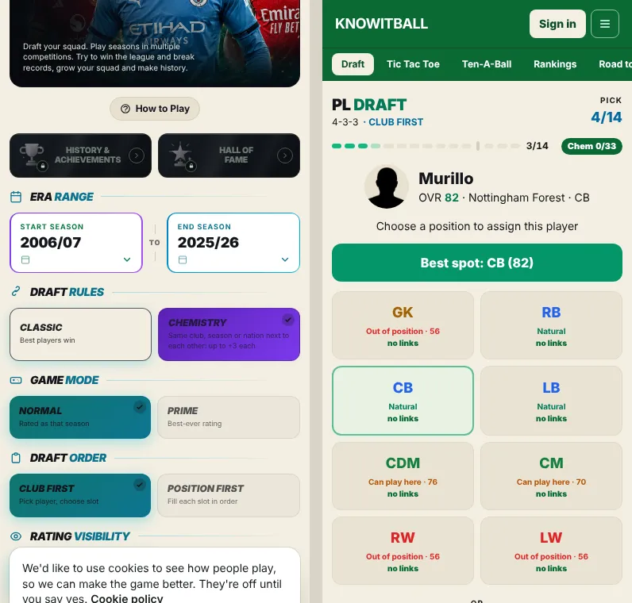
Starters next to each other on the pitch link: same club and same season 3, same club 2, same nation 1. A player’s chemistry is half his link points, up to 3, and only in a spot he can play. Team chemistry up to 33. Each point is +1 to his overall and every stat for the season, like FUT.
Measured over 300 squads: full chemistry (33) is worth about 6–10 league points a season; a typical mixed squad (9–15) about 2–4. Worth chasing, doesn’t decide everything. A test pins it: 2003/04 Arsenal together scores 33, eleven strangers 0, a man out of position 0.
“Chem 12/33” next to the pick count, and on every free spot what he’d get there (“+2 chem” or “no links”).
RANKED OR CUSTOM: ONLY THREE BOARDS
The standard rules (full era, 3 re-spins, ratings shown) count for the Hall of Fame: Normal, Prime or Chemistry (Chemistry plays with Normal ratings). The setup screen says which board, in green.
Change anything else (fewer re-spins, hidden ratings, a narrower era, Chemistry with Prime) and it says so in amber: “Custom (1 re-spin): your history only”. It plays the same, it just never sits next to standard drafts.
The Hall of Fame only accepts Normal and Prime today. Run supabase/migrations/draft_records_chemistry.sql once in the Supabase SQL editor; until then Chemistry drafts go in your history but not the board. The board’s tab shows with your switch on.
CONVINCE TO STAY: HIGHER OR LOWER
Cards from your own squad: is the next one’s overall higher or lower? One wrong and he goes. A tie counts as right. Played sensibly he stays about 43% of the time (the old coin flip was 50%), but now it’s your call.
WATCH THE BIG GAMES
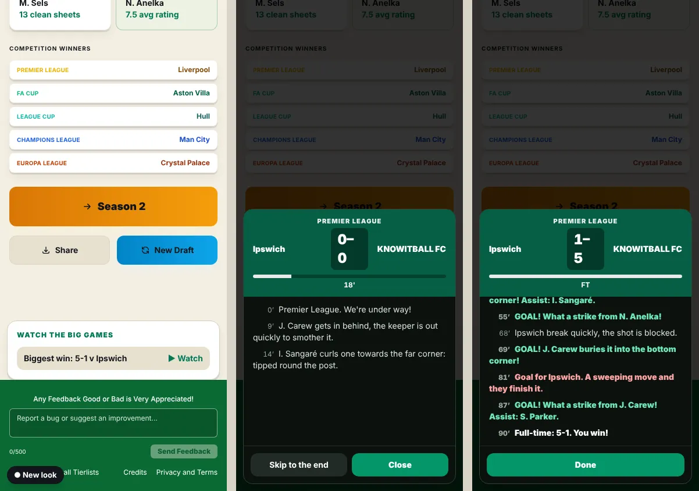
Under every season once it has finished revealing (so nothing is given away): the FA Cup, League Cup, Champions League and Europa League finals you reached, plus your biggest win. About 45 seconds a match, or Skip.
Your goals keep their real scorer, assist and minute from the season; it never re-simulates, so watching changes nothing.
FIXED
The squad list is highest-rated first, always (I’d changed it to “best fit”; undone). The “Needs” line stays.
The Daily Draft and Challenge cards line up with the setup underneath, with even gaps; they no longer touch or run edge to edge.
NEXT
In a room, both screens play the same match in the Match Centre at the same moment; finals between friends play automatically, Skip stays.
A separate long mode on the same players and simulator: step through 38 weeks, pick the XI and mentality, watch or quick-result each match, one half-time change, transfer windows with a budget, then the chairman layer (board targets, money). Its own Hall of Fame. Plan: docs/DRAFT_MANAGER_PLAN.md.
How it was checked
A Chemistry draft was played to the end in a real browser with the live site’s data: the Ranked line, the chemistry count and spot hints, the season, Watch the big games, the Match Centre live and skipped to full time. New tests: chemistry (links, caps, out of position, the boost), Ranked/Custom, higher-or-lower (and its odds over 20,000 deals), the match timeline (same story every time, real scorers, extra time and penalties). Not played yet in a browser: the higher-or-lower game itself (it only appears when a player wants to leave in pre-season, which is random); its rules are tested.
ROUND 4 · 27 NOV · DAILY DRAFT, BETTER PICKING, TIC TAC TOE AND TEN-A-BALL
WHAT YOU SAID
“Carry on, do em all.”
DRAFT: THE DAILY DRAFT
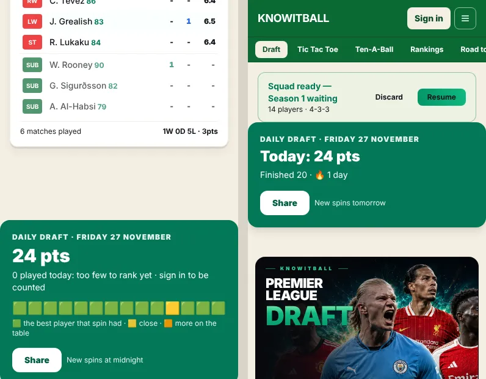
Picked from today’s date: two separate players got exactly the same 14 club-seasons in the same order. Same settings for all (normal ratings, pick player then spot, no re-spins).
Your first season’s points against everyone else’s today: “Top 12% of 340”. One score per player: their first of the day, so replaying doesn’t help. Signed-in players are counted.
Your 14 picks as squares (green: the best player that spin had), points, finish and top-% in one tap; a streak of days played.
DRAFT: BETTER PICKING
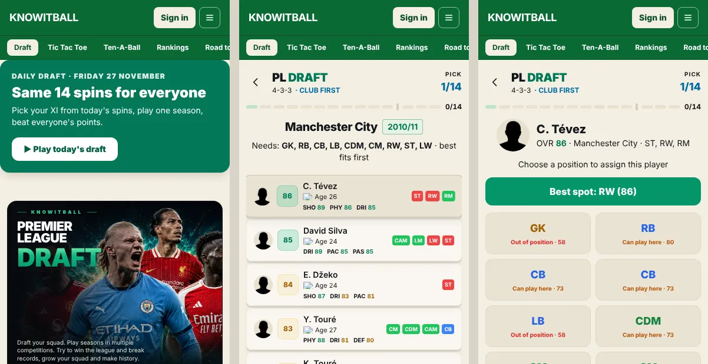
Each spot says Natural, Can play here (with his rating there) or Out of position (in red). These are the season simulator’s own numbers: a keeper up front was rated 58, not 86.
The free spot where he rates highest, as one green button.
The list says which spots are still empty and puts the players who’d rate highest in them first.
Three seasons had 21 clubs: Bournemouth in 2012/13 (League One), Aston Villa in 2018/19 (Championship), Sunderland in 2021/22 (League One). Removed from the spins. Strasbourg was already fixed by a teammate.
A card for admins to the Challenge Draft test page (every pick is a brief).
TIC TAC TOE
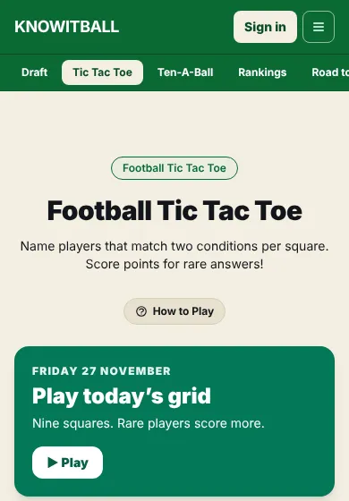
Finishing a daily grid counts towards a streak (this device). Share opens your phone’s share sheet with the result squares and the link.
TEN-A-BALL
Challenges grouped by topic; your best score on each card; Share at the end (“7/10 ⚽⚽⚽…”). The duplicate “Danish players” is gone for everyone. The challenge of the day was already added by a teammate.
RANKINGS (TIERLISTS)
Mikey paused Rankings on 17 Nov (“make the rankings mode unavailable right now”). With your switch on they run and show in the game links, so you can test them in the new look. Bringing them back for everyone needs Mikey’s yes.
NEXT
Built only when you decide one thing: it changes season results, so new records would beat old ones more easily. Count them in the Hall of Fame, or keep a separate board?
Beat-my-XI links for friends, the season told as a story, levels that unlock eras and formations.
How it was checked
The Daily Draft was played to the end in a real browser twice (14 picks, pre-season, the season, the result card, back to setup); both runs got identical spins. New tests: the daily spins (same for everyone whatever order the list arrives in, new each day), ranking %, share text; Tic Tac Toe streak; Ten-A-Ball best and share. The readability check passed on Draft and Tic Tac Toe in light and dark, signed out and as admin. Tic Tac Toe’s daily grid, Ten-A-Ball’s list and the ranking with real players need the live database: checked on the live site after this goes up.
ROUND 3 · 26 NOV · HALL OF FAME, HOME DARK MODE, ADMIN PANEL; THE READABILITY CHECK
WHAT YOU SAID
“You should NEVER be letting stupid shit like this pass. So so easy to check for surely. Also home page dark mode doesn’t work. Also Mikey’s really cool draft pictures … I rlly want them too.”
WHY IT GOT THROUGH
The Hall of Fame boards only show when you’re signed in, so my pictures showed the “Sign in” box instead. The new check signs in as a pretend player (and as an admin) inside its own test browser.
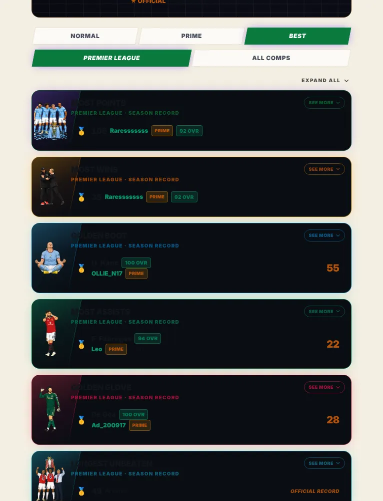
FIXED
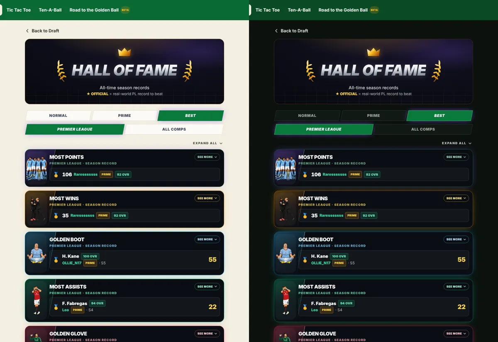
Any box drawn for a dark page (the Draft poster, Hall of Fame boards, History and Hall of Fame buttons) is found by measuring its colour and kept exactly as designed, as a dark card on the cream, like the phone picture on the home page. No page had to be listed by hand, so a new one works too.
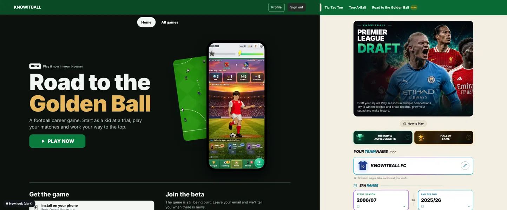
The home has its own colours; it now has a dark version in the same greens.
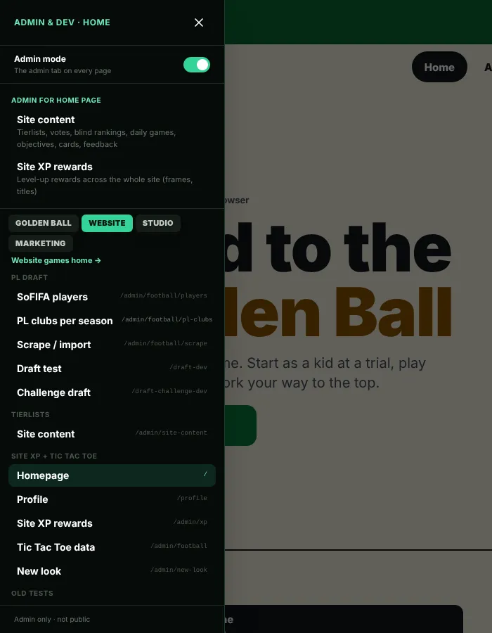
Keeps its own dark colours on every page in the new look.
ALSO FIXED FOR EVERYONE (FAINT ON TODAY’S SITE TOO)
Deeper orange so the white words read.
Selected options (Normal, Club first …) in deeper colours; the small lines under them, “14 spins”, the team name and the room-code preview brighter.
Brighter small words and the Sign In button.
THE CHECK (EVERY ROUND FROM NOW ON)
14 pages × light, dark and today’s look × signed out and in × phone and computer. Anything under 3 : 1 is listed with a picture. It runs on a local build with the real site’s data. Brain rule RUL-UI-014: no look change ships without it.
How it was checked
Full run: 162 of 168 page checks passed; the 6 left were one greyed-out “sign in to play with friends” preview (now marked as disabled and lighter). Hall of Fame, home and Draft were also looked at by eye in both looks. Not covered by the check: words on top of photos (can’t be measured from colours), and pages that need a real account’s own data (your own history and profile show the empty versions).
ROUND 2 · 26 NOV · THE NEW LOOK, ON THE REAL SITE, ONLY FOR YOU
WHAT YOU ASKED FOR
“Is there a way I can test all this without having to change the entire website … or maybe just make it a lil secret admin setting.” Plus your answers: dark mode as an option, keep the game links, bring Tierlists back, everything for Draft, a daily Ten-A-Ball.
HOW TO TRY IT
On / Off, and Light (cream) / Dark. A list of every page to check. Only this device: sign in on another and it’s off there.
While it’s on, bottom-left on every page: tap for Light, Dark or Turn off.
Go to knowitball.co.uk/?look=v2 while signed in as an admin (and /?look=off to stop).
WHAT IT LOOKS LIKE (TODAY · LIGHT · DARK)
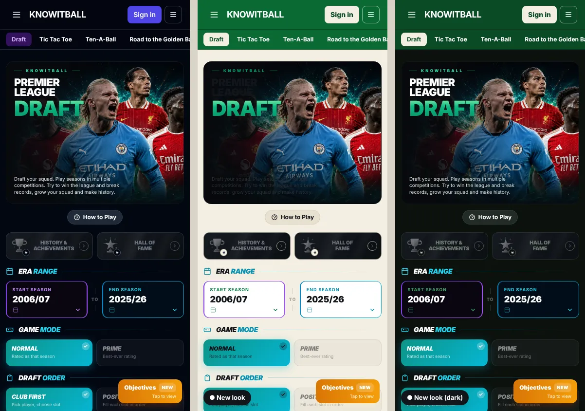
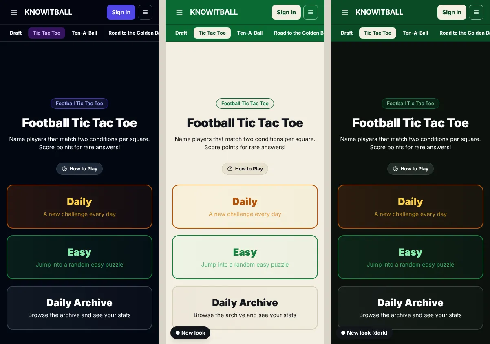

The green top bar and footer, cream Sign in, green buttons instead of purple, the page you’re on as a cream pill in the game links. Game screens and admin pages don’t change.
FIXED FOR EVERYONE (NOT JUST THE PREVIEW)
No more “Knowitball | Knowitball” on Draft, Tic Tac Toe, Ten-A-Ball; Objectives has a title.
Says “Knowitball” and “keep your careers, drafts and scores on every device”.
Now says three lives (was “ten lives”).
On a computer it sits under the top bar, not over Sign in.
NEXT (ALL BEHIND THE SWITCH)
Each page checked in both looks; Draft’s own screens restyled properly (this round only made them readable).
Tic Tac Toe (today’s grid first, rarity, streak, share), Ten-A-Ball (challenge of the day, the duplicate removed), Tierlists back.
Faces, clean clubs, out-of-position warning, faster picks; Daily Draft; links; Challenge Draft; play a friend.
How it was checked
Built the site and opened 14 pages three ways (switch off, light, dark) at phone size. With the switch off the colours are exactly today’s (same background on every page, checked). A new test checks the colour settings, which pages change, and the start-up script. Not seen yet: Draft’s pick screens and Ten-A-Ball’s list in the new look (they need the live database; checked on the live site after this goes up).
ROUND 1 · 24 NOV · THE PLAN: TWO LOOKS TODAY, 10 FAULTS, DRAFT IDEAS
WHAT YOU ASKED FOR
“The home screen, that’s perfect. Across all pages we want a consistent theme, look … header footer sidebar links … keep the other old games up to date … Draft can certainly be made a LOT better.”
TODAY: TWO WEBSITES IN ONE
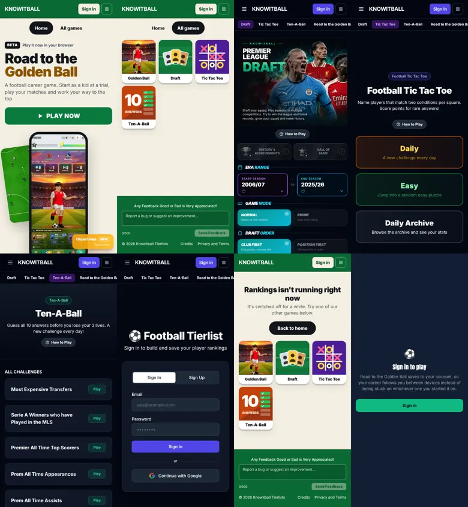
It is a set of overrides in the home’s own style file. So the main job is to make those colours the site’s normal ones, then tidy each page.
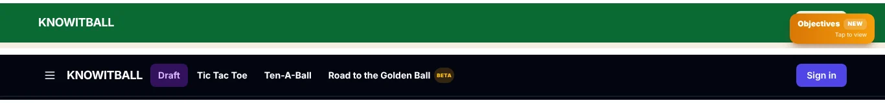
10 FAULTS FOUND ON THE WAY
Two menu buttons in the phone top bar · sign-in still says “Football Tierlist” · page titles say “Knowitball | Knowitball” · on a computer the Objectives badge covers Sign in · the game strip is cut off on phones.
Says “a new challenge every day” but is a fixed list of 33, with “Danish players” twice. The menu says “ten lives”, the game gives 3.
Every player is a grey silhouette · “RC Strasbourg 2023/24” (French) spun past in the Premier League reel · a keeper can be put up front with no warning.
/legend is a 404; Tierlists, Rankings, Vote, Create and Find all say “isn’t running right now”.
THE PLAN, PICTURED
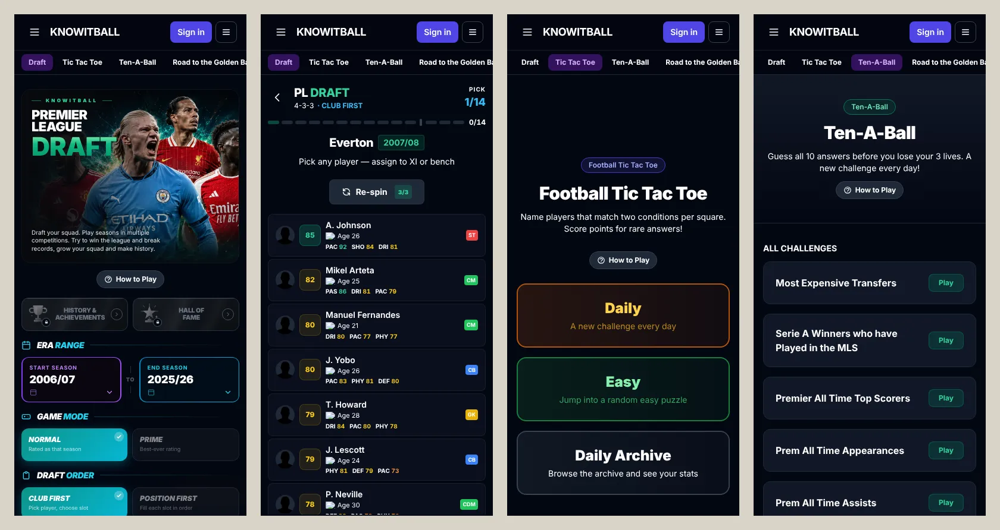
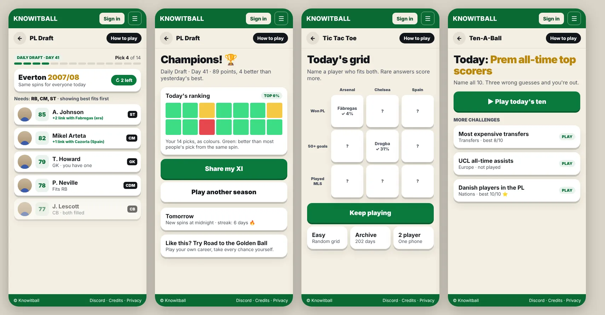
Green top bar: logo, Sign in, ONE menu (games, profile, objectives, Discord). A game bar on game pages. The green footer everywhere. No sidebars. The career game keeps its own full-screen screens.
The home’s colours, type, cards and buttons as named settings every page uses; purple removed. A build check stops anyone adding the old navy/purple back.
Each one shown fixed.
Tic Tac Toe: today’s grid opens straight away, how rare each answer was, a streak, a share grid. Ten-A-Ball: a real challenge of the day (same for everyone), topics, your best on each card, share.
Wave 1: faces back, clean club list, out-of-position warning, “Needs: RB, CM, ST” with best fits first, faster picks. Wave 2: Daily Draft (same 14 spins for everyone, your ranking, streak, share grid: the biggest growth idea), links between players from the same club, nation or era, a “Share my XI” picture. Wave 3: Challenge Draft (built on a test page already), beat-my-XI links for friends, the season told as a story, levels that unlock eras and formations, and a link to Road to the Golden Ball.
YOUR CALLS (FEEDBACK FIRST, THEN SAY GO)
Recommended: yes.
Recommended: yes (the home never had it; it doesn’t fit a phone).
Five pages say “not running” today.
Recommended: yes.
Recommended: yes.
How it was checked
22 live pages opened on a phone and a computer, with screenshots, background colour, title and heading read from each. Draft played on the live site to pick 11 of 14 (about 5 s a pick). Tic Tac Toe’s daily, archive and Ten-A-Ball opened. The 33 Ten-A-Ball challenges counted. The “after” pictures are a drawn mock-up using the home’s exact colours, not the built site. Not checked: the Draft season results screen (my test didn’t reach it), and how many daily grids are queued (the database isn’t reachable from here).